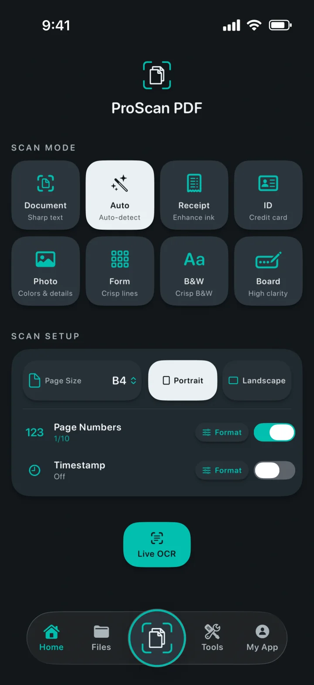
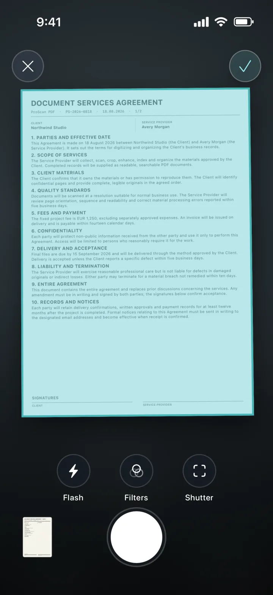
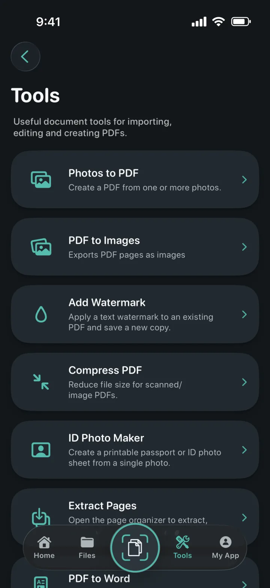
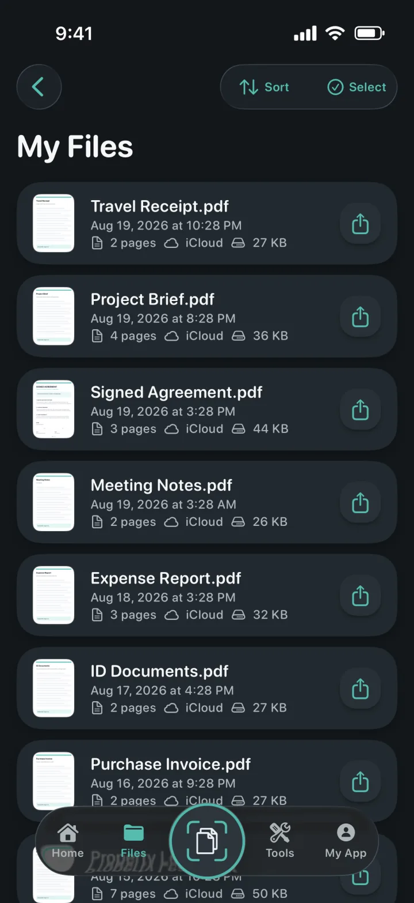
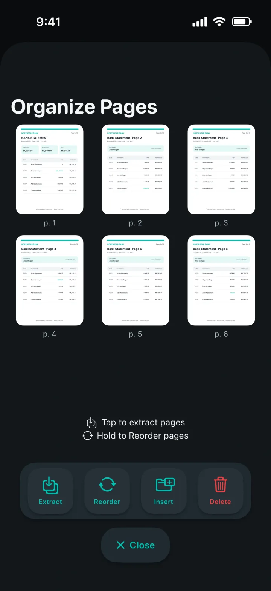
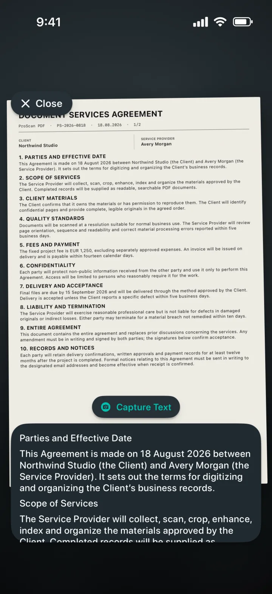

Photos to PDF
Turn one or more photos into a polished PDF.
A scanner that understands the page
Turn documents, receipts, IDs, notes and photos into polished PDFs. Then edit, sign, protect and share them without ads or watermarks.

A scanner that understands the page
Choose the right mode, frame the page and let Apple’s document scanner handle the capture. Set page size, orientation, page numbers and timestamps before you begin.

A complete PDF toolkit
Import, convert, edit and create PDFs from one focused workspace.

Turn one or more photos into a polished PDF.
Export every PDF page, then save or share it.
Apply colored text watermarks to a new PDF copy.
Reduce scanned and image-based PDF file sizes.
Crop, check and export exact sizes or printable sheets.
Extract, reorder, insert or delete PDF pages.
Create editable Word files, preserving layout where possible.
Create searchable copies and find text in the viewer.


Documents stay organized
Local copies make the library fast to open. Private iCloud backup helps keep documents available when you move to another Apple device.
Privacy is the architecture
Scanning, OCR and PDF processing happen locally on your device. ProScan PDF does not upload your documents to its own servers.
Read the privacy policyOCR and searchable documents
Capture text live, extract editable content from scans or create searchable PDF copies—all processed on your iPhone or iPad.

Designed around you
Every theme changes the app’s interface and gives you a matching Home Screen icon.
Scanner teal and paper white on graphite.
Electric cyan and violet on deep black.
Clean blue controls on a light paper surface.
Coral, violet and mint on soft charcoal.
Champagne and blush on refined midnight navy.
Cool silver and polished gold on graphite.
Warm cream and terracotta on deep forest green.
Available in English, German, Spanish, French, Italian, Dutch, Polish, Portuguese, Turkish, Simplified Chinese, Japanese, Korean and Hindi.
Questions, answered
Clear details about privacy, storage and what you can do with ProScan PDF.
No. ProScan PDF does not place ads in the app or add watermarks to scanned documents.
Core scanning, OCR and PDF tools run on your device and work offline. iCloud backup and sharing need a network connection.
Documents are kept in the app’s local library for fast access. When iCloud is available, private backup copies can be stored in your iCloud account.
Photos to PDF, PDF to Images, watermarking, compression, ID Photo Maker, page extraction and organization, PDF to Word, searchable PDFs, merging, signing and password protection.
You get three free scans every day. Pro unlocks unlimited scanning and all Pro tools.

Your next document is one tap away
No ads. No watermarks.